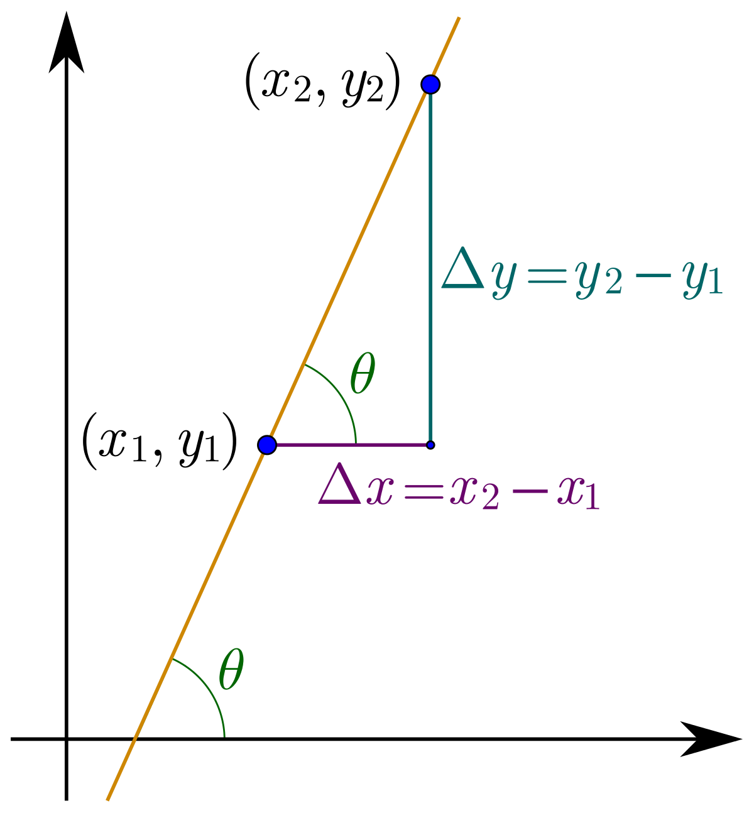
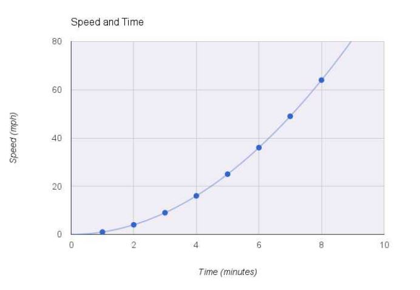
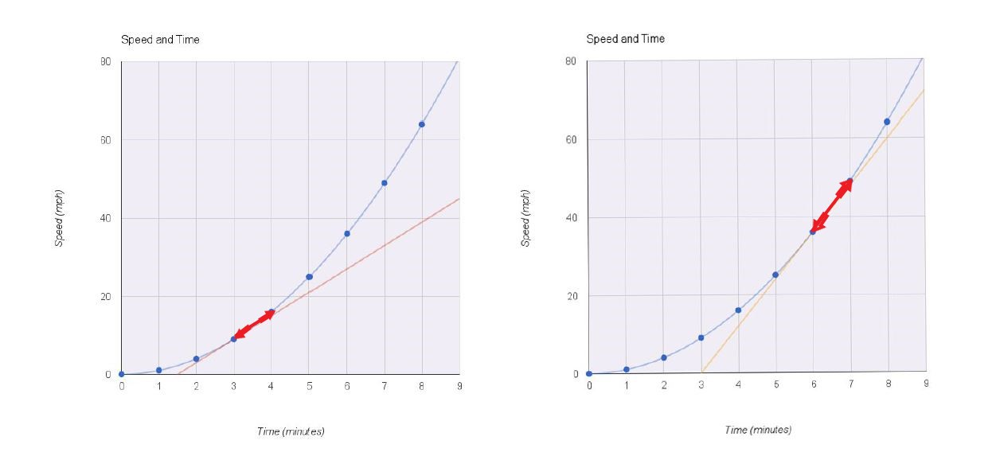
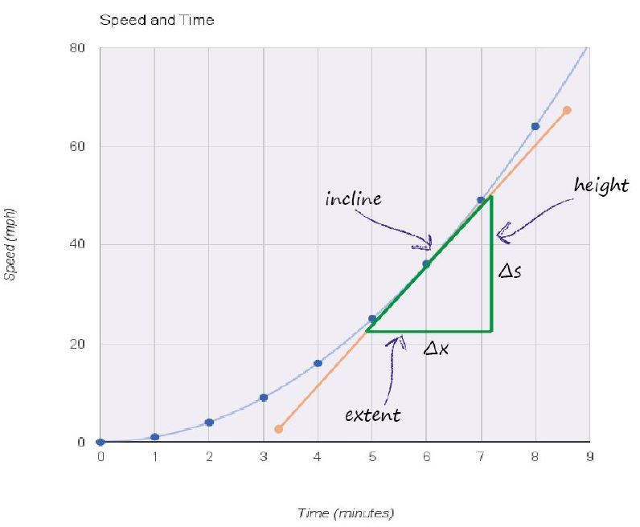
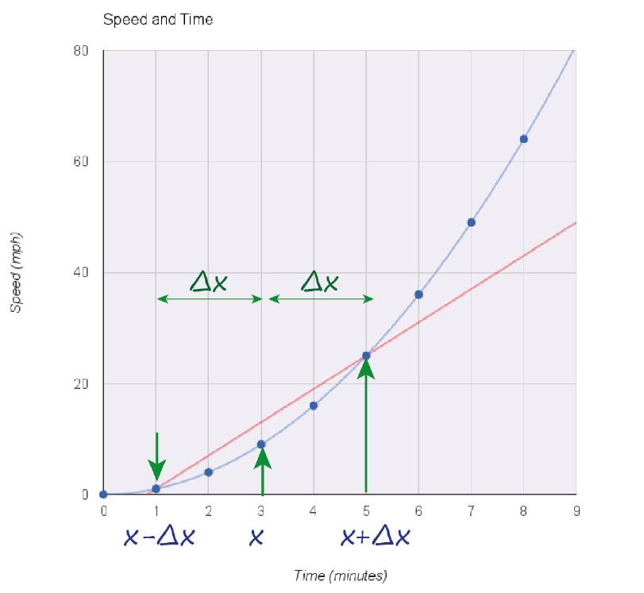
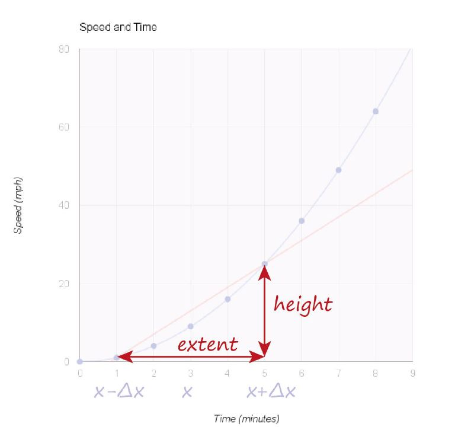

Calculus By Hand & Calculus Not By Hand
Previous: Calculus By Inspection - Flat Line, Sloped Straight Line, Gradient
In the previous section, we arrived at the derivative of a straight line by inspecting it's graph, table and equation. We also understood that the derivative of a straight line is it's slope(i.e. gradient). Doing things by inspection is good for a start, but let's try to reduce the manual effort required to calculate the slope by looking at it's formula. This will help us solidify our understanding of the concept.
Slope of a straight line
To calculate the slope by inspection, we rearranged the equation of the line, compared it with the general equation and figured out the m value. How do we calculate the slope if we're not given the equation of the line?
We know that the slope of a straight line is it's rate of change. i.e. Given that x changes by a certain amount, what is the corresponding amount of change in y? Mathematically, this is written as \(\Delta y \over \Delta x\), where \(\Delta\) means a "small change".
This can be represented on a graph as:

where \(\Delta x = x_2-x_1\) and the corresponding \(\Delta y = y_2-y_1\). Note that \(\Delta x\) can be chosen to be of any size and the corresponding \(\Delta y\) can be calculated.
Thus, for a straight line, $$derivative = gradient = slope = rate \ of \ change = {\Delta y \over \Delta x} = {y_2-y_1 \over x_2-x_1}$$
A curved line
Let's inspect a curved line and try to find it's derivative. Consider a car that starts from rest and keeps accelerating as time goes by. Imagine that the accelerator is pressed really hard and the increase in speed isn't constant. i.e. it is not adding 10 miles/hour every minute. Instead it is adding speed at a rate that keeps going up the longer we keep the accelerator pressed.
Graph of the car's speed over time

Table showing the car's speed over time
| time (minutes) | speed (miles/hour) |
|---|---|
| 0 | 0 |
| 1 | 1 |
| 2 | 4 |
| 3 | 9 |
| 4 | 16 |
| 5 | 25 |
| 6 | 36 |
| 7 | 49 |
| 8 | 64 |
Equation of the car's speed over time
$$s = t^2$$
Upon inspection, we see that the change in speed at different points in time are not the same.
For example, at time=3 minutes, the change in speed is 16-9=7 miles/hour and at time=6 minutes, the change in speed is 49-36=13 miles/hour.
We also see that the graph isn't a straight line anymore.
In this case, how do we calculate the derivative of speed with respect to time.
In other words, what's the rate of change of speed with respect to time?
In the previous examples, where we the graphs were straight lines, we saw that the rate of change was the slope of the graph of speed against time. Can we apply the same thinking to curved lines?
Yes, we can! But, we need to think about this in a slightly different way.
Calculus by hand - Tangents
We've seen that the derivative(rate of change) of the curve is different at different points in the curve. Let's visualize this by drawing "tangents" at different two points - time =3 minutes and time=6 minutes.
The tangent of a curve at a particular point is a straight line that touches the curve only at that particular point and tries to be at the same gradient as the curve.

By calculating the slope of these tangents, we can find the rate of change of speed with time at those points.

Therefore, the rate of change of a curve at any point is the slope of the curve at that point.
Calculus not by hand - Secants
Using rulers to draw tangents is not going to be very accurate. So, let's look at a more sophisticated method. Take a look at the graph below.

The straight line in the above graph is called a secant. A secant of a curve is a line that intersects the curve at a minimum of two distinct points.
We've drawn a secant that is centered at time=3 minutes and intersects at points 2 minutes above and below the center. (i.e. time=1 minute and time=5 minutes). In mathematical terms:
- \(x = 3 \ minutes\)
- \(\Delta x\ = 2 \ minutes\) (the small change in x )
- \(x+\Delta x = 5 \ minutes\)
- \(x-\Delta x = 1 \ minute\)
Eyeballing our secant line centered at x=3 minutes, we can see that it has roughtly the same slope of the tangent line at x=3 minutes. Let's calculate the slope of the secant to confirm this.

$$Slope \ of \ the \ secant = {height \over extent} = {24 \over 4} = 6 {mph \over minute} $$
This value is pretty close to slope of the tangent at time=3 minutes(7 mph/minute).
Tangent vs Secant for gradient calculation
Summary
Based on: Make Your Own Neural Network